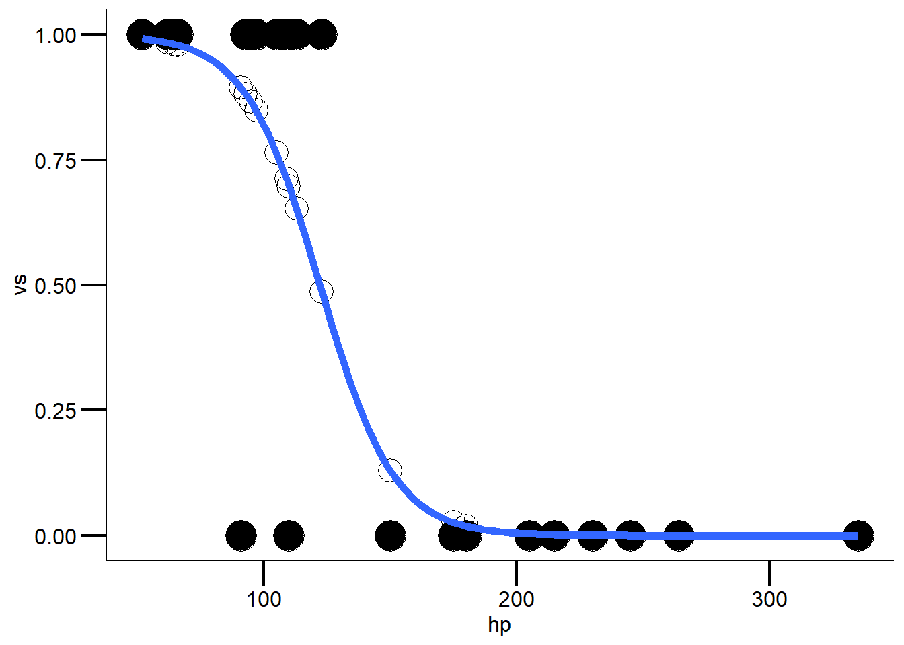
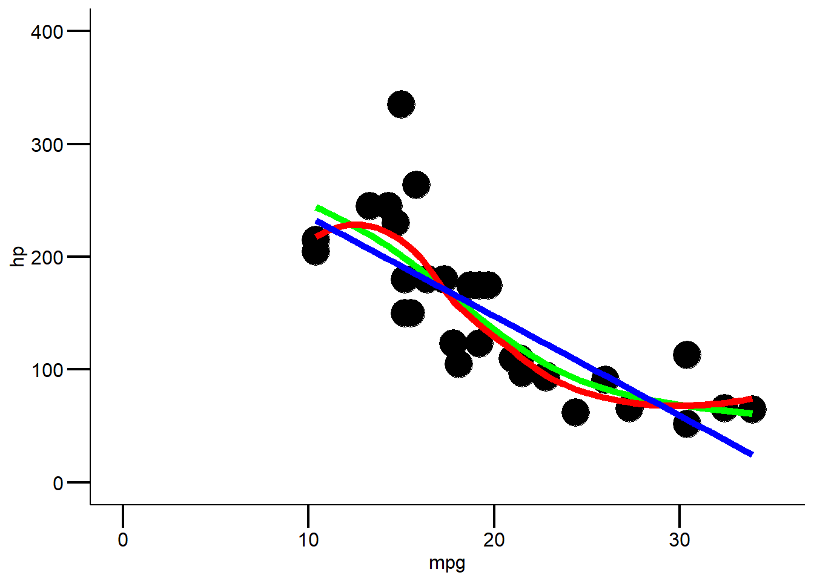
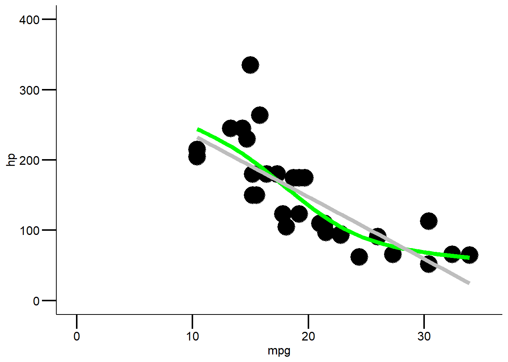

library("ggplot2")
library("deplyr")
## Error in library("deplyr"): there is no package called 'deplyr'
mytheme <-
theme_classic() +
theme(
axis.line = element_line(color = "black"),
axis.text = element_text(size = 12, color = "black"),
axis.title = element_text(size = 12, color = "black"),
axis.ticks = element_line(size = .75, color = "black"),
axis.ticks.length = unit(.5, "cm")
)StatKons4: Demo
- Download dieses Demoscript via “</>Code” (oben rechts)
Poisson Regression
############
# quasipoisson regression
############
cars <- mtcars |>
mutate(kml = (235.214583 / mpg))
## Error in mutate(mtcars, kml = (235.214583/mpg)): could not find function "mutate"
glm.poisson <- glm(hp ~ kml, data = cars, family = "poisson")
## Error in eval(predvars, data, env): object 'hp' not found
summary(glm.poisson) # klare overdisperion
## Error in summary(glm.poisson): object 'glm.poisson' not found
# deshalb quasipoisson
glm.quasipoisson <- glm(hp ~ kml, data = cars, family = quasipoisson(link = log))
## Error in eval(predvars, data, env): object 'hp' not found
summary(glm.quasipoisson)
## Error in summary(glm.quasipoisson): object 'glm.quasipoisson' not found
# visualisiere
ggplot2::ggplot(cars, aes(x = kml, y = hp)) +
geom_point(size = 8) +
geom_smooth(
method = "glm", method.args = list(family = "poisson"), se = F,
color = "green", size = 2
) +
scale_x_continuous(limits = c(0, 35)) +
scale_y_continuous(limits = c(0, 400)) +
theme_classic()
## Error in `geom_point()`:
## ! Problem while computing aesthetics.
## ℹ Error occurred in the 1st layer.
## Caused by error in `FUN()`:
## ! object 'kml' not found
# Rücktransformation meines Outputs für ein besseres Verständnis
glm.quasi.back <- exp(coef(glm.quasipoisson))
## Error in coef(glm.quasipoisson): object 'glm.quasipoisson' not found
# für ein schönes ergebnis
glm.quasi.back |>
broom::tidy() |>
knitr::kable(digits = 3)
## Error in broom::tidy(glm.quasi.back): object 'glm.quasi.back' not found
# for more infos, also for posthoc tests
# here: https://rcompanion.org/handbook/J_01.htmllogistische Regression
############
# logistische regression
############
cars <- mtcars
# erstelle das modell
glm.binar <- glm(vs ~ hp, data = cars, family = binomial(link = logit))
#achtung Model gibt Koeffizienten als logit() zurück
summary(glm.binar)
##
## Call:
## glm(formula = vs ~ hp, family = binomial(link = logit), data = cars)
##
## Deviance Residuals:
## Min 1Q Median 3Q Max
## -2.12148 -0.20302 -0.01598 0.51173 1.20083
##
## Coefficients:
## Estimate Std. Error z value Pr(>|z|)
## (Intercept) 8.37802 3.21593 2.605 0.00918 **
## hp -0.06856 0.02740 -2.502 0.01234 *
## ---
## Signif. codes: 0 '***' 0.001 '**' 0.01 '*' 0.05 '.' 0.1 ' ' 1
##
## (Dispersion parameter for binomial family taken to be 1)
##
## Null deviance: 43.860 on 31 degrees of freedom
## Residual deviance: 16.838 on 30 degrees of freedom
## AIC: 20.838
##
## Number of Fisher Scoring iterations: 7
# überprüfe das modell
cars$predicted <- predict(glm.binar, type = "response")
# visualisiere
ggplot(cars, aes(x = hp, y = vs)) +
geom_point(size = 8) +
geom_point(aes(y = predicted), shape = 1, size = 6) +
guides(color = "none") +
geom_smooth(method = "glm", method.args = list(family = 'binomial'),
se = FALSE,
size = 2) +
# geom_smooth(method = "lm", color = "red", se = FALSE) +
mytheme
#Modeldiagnostik (wenn nicht signifikant, dann OK)
1 - pchisq(glm.binar$deviance,glm.binar$df.resid)
## [1] 0.9744718
#Modellgüte (pseudo-R²)
1 - (glm.binar$dev / glm.binar$null)
## [1] 0.6161072
#Steilheit der Beziehung (relative Änderung der odds von x + 1 vs. x)
exp(glm.binar$coefficients[2])
## hp
## 0.9337368
#LD50 (wieso negativ: weil zweiter koeffizient negative steigung hat)
abs(glm.binar$coefficients[1]/glm.binar$coefficients[2])
## (Intercept)
## 122.1986
# kreuztabelle (confusion matrix): fasse die ergebnisse aus predict und
# "gegebenheiten, realität" zusammen
tab1 <- table(cars$predicted>.5, cars$vs)
dimnames(tab1) <- list(c("M:S-type","M:V-type"), c("T:S-type", "T:V-type"))
tab1
## T:S-type T:V-type
## M:S-type 15 2
## M:V-type 3 12
prop.table(tab1, 2)
## T:S-type T:V-type
## M:S-type 0.8333333 0.1428571
## M:V-type 0.1666667 0.8571429
#was könnt ihr daraus ablesen? Ist unser Modell genau?
# Funktion die die logits in Wahrscheinlichkeiten transformiert
# mehr infos hier: https://sebastiansauer.github.io/convert_logit2prob/
# dies ist interessant, falls ihr mal ein kategorialer Prädiktor habt
logit2prob <- function(logit){
odds <- exp(logit)
prob <- odds / (1 + odds)
return(prob)
}GAM’s
###########
# LOESS & GAM
###########
ggplot2::ggplot(mtcars, aes(x = mpg, y = hp)) +
geom_point(size = 8) +
geom_smooth(method = "gam", se = F, color = "green", size = 2, formula = y ~ s(x, bs = "cs")) +
geom_smooth(method = "loess", se = F, color = "red", size = 2) +
geom_smooth(method = "glm", size = 2, color = "blue", se = F) +
scale_x_continuous(limits = c(0, 35)) +
scale_y_continuous(limits = c(0, 400)) +
mytheme
ggplot2::ggplot(mtcars, aes(x = mpg, y = hp)) +
geom_point(size = 8) +
geom_smooth(method = "gam", se = F, color = "green", size = 2, formula = y ~ s(x, bs = "cs")) +
# geom_smooth(method = "loess", se = F, color = "red", size = 2) +
geom_smooth(method = "glm", size = 2, color = "grey", se = F) +
scale_x_continuous(limits = c(0, 35)) +
scale_y_continuous(limits = c(0, 400)) +
mytheme